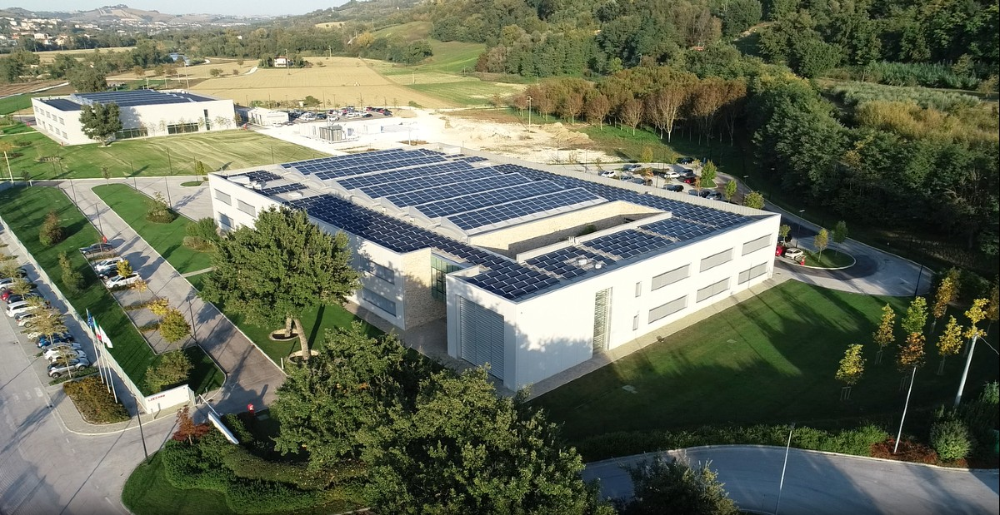
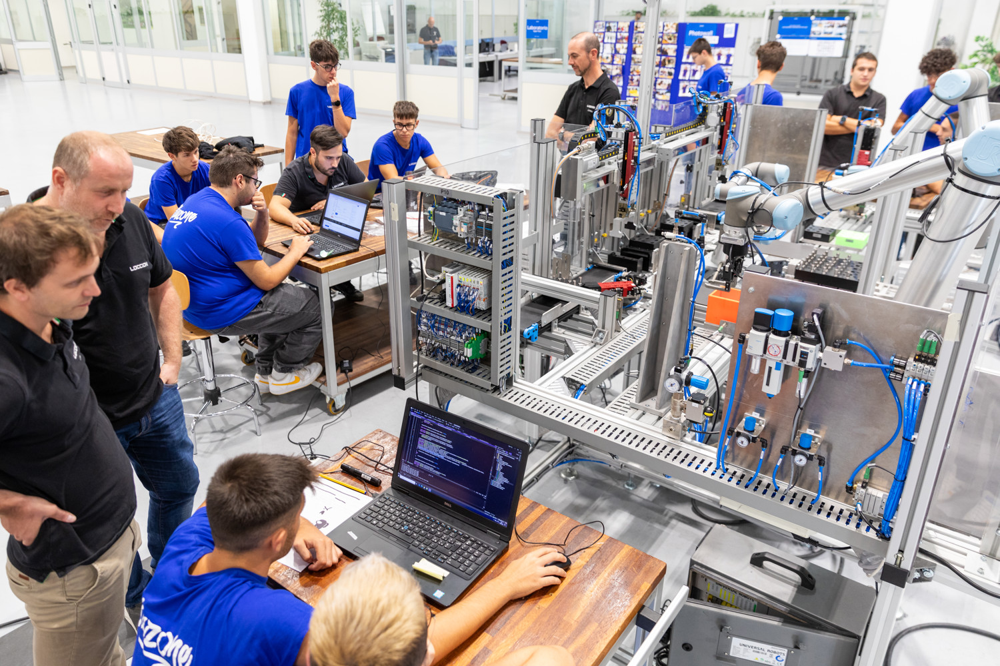

Durante il mio stage ho avuto la possibilità di collaborare con Loccioni, un’azienda innovativa che lavora nel campo dell’automazione e della misurazione. Fin da subito l’ambiente è stato stimolante e accogliente, e ho potuto vedere da vicino come si lavora in una vera realtà aziendale.
Il progetto principale su cui ho lavorato era la realizzazione di un banco prova per testare gli iniettori delle automobili, in particolare la realizzazione della web app per la visualizzazione dei pezzi buoni e di scarto. È stato entusiasmante mettere in pratica conoscenze scolastiche in un contesto concreto.

Alla fine abbiamo completato il banco prova, che univa precisione e tecnologia. Vedere il risultato finale funzionare davvero è stata una grande soddisfazione. Ci ha aiutato molto anche il confronto continuo con i tecnici dell’azienda.
Un momento molto particolare è stato l’ultimo giorno: abbiamo organizzato una visita guidata per amici e familiari, in cui noi studenti abbiamo raccontato il progetto e mostrato come funziona il banco prova. È stato bello condividere ciò che abbiamo fatto.

Il bilancio di questa esperienza è davvero positivo. Ho imparato molto, non solo a livello tecnico ma anche umano: lavorare in gruppo, rispettare le scadenze e affrontare problemi reali. Se proprio dovessi trovare una difficoltà, è stato il poco tempo a disposizione... ma questo ci ha anche spinto a dare il massimo ogni giorno.

Video del Banco Prova in azione